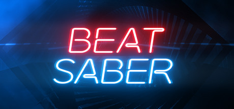

|
 Beat Saber Moim zainteresowaniem jest gra komputerowa na gogle wirtualnej rzeczywistości "Beat Saber". Polega ona na machaniu mieczami świetlnymi do rytmu muzyki, trafiając kolorowe klocki. W rękach trzyma się miecze w dwóch różnych kolorach. Trzeba przeciąć klocki nie tylko poprawnym kolorem, lecz również w poprawnym kierunku. Choć w podstawowej grze jest niewiele dostępnych piosenek i ogólnej treści, można ściągnąć do niej wiele modów, ulepszających grywalność. Dodają możliwość zmiany praktycznie wszystkiego, od mieczy do klocków i wiele innych rzeczy. Istnieje jednak pewien najpopularniejszy mod, o nazwie "ScoreSaber". Dodaje on możliwość profesjonalnego grania wraz z rywalizacją o najlepsze wyniki w piosenkacsah. Używany jest on przez 2 miliony użytkowników. Przez niego można uświadomić sobie o gigantycznie wysokim skill cap'ie. Niektórzy grają setki, nawet tysiące godzin, by być lepszym od innych. Zaliczam się do właśnie tych osób, którzy uważają tę grę jako ich ulubioną. Poza zwykłym relaksem, machaniem rąk do rytmu istnieją profesjonalne turnieje, w których można wygrać różne nagrody, m.in. pieniądze. W społeczeństwie profesjonalnym można spotkać wielu miłych ludzi, z którymi osobiście spędzam czas poza grą. Według mnie Beat Saber jest świetną grą przez kilka powodów. Po pierwsze, daje nam coś do robienia podczas słuchania naszych ulubionych piosenek. Granie również jest dość sporym wysiłkiem fizycznym, gdyż machanie rękami okazuje się bardzo męczące. Poza tym, po prostu czujesz się jak totalny Jedi, mimo że dla innych wyglądasz jak małpa. Jeśli masz gogle VR, bez względu na to czy lubisz gry rytmiczne, czy nie, bardzo polecam tę grę. Ulubione strony WWW |